通話中はAirPodsを押してミュート
通話中にステムを1回押すとミュート、もう1回押すとミュート解除になります。Google MeetなどのWeb通話でAirPodsの操作が効かないChromeでも問題なく動作します。

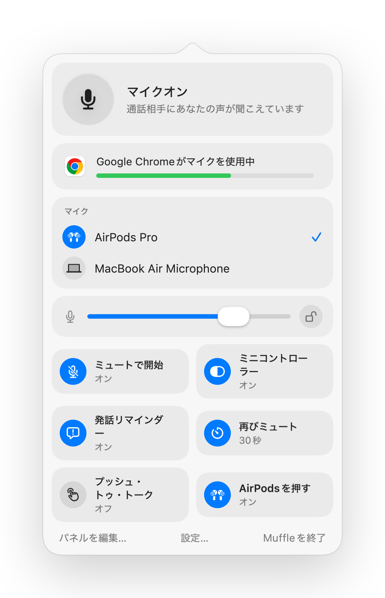
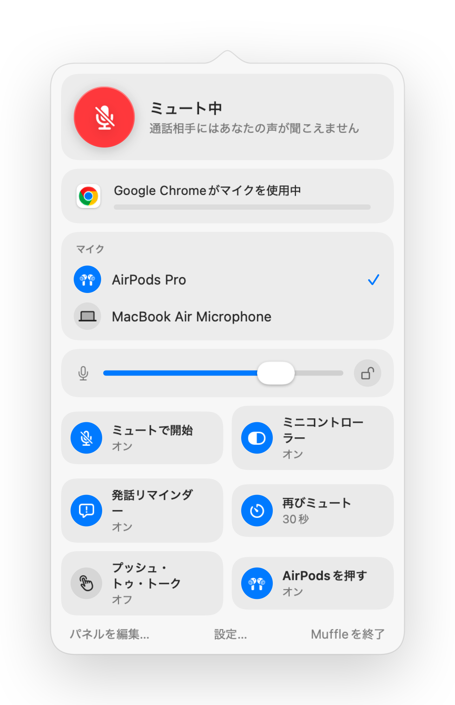
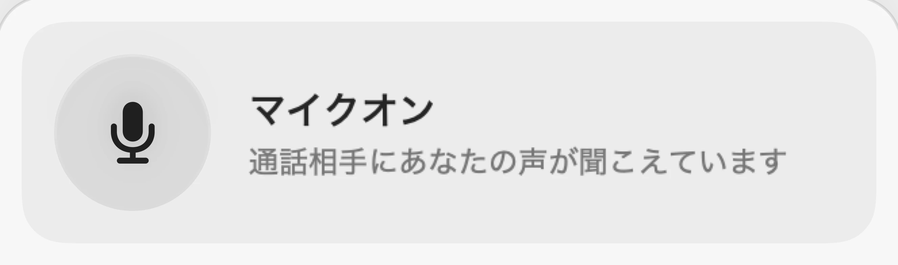
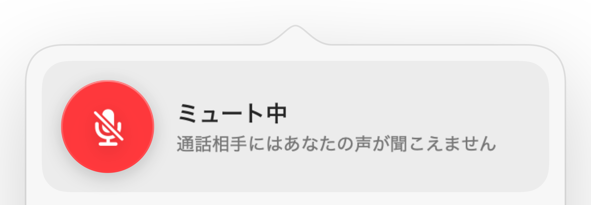
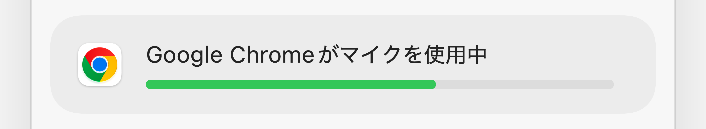
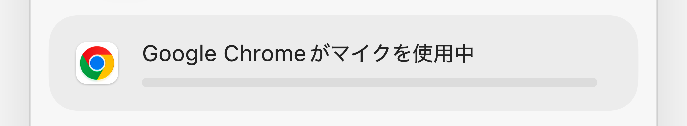
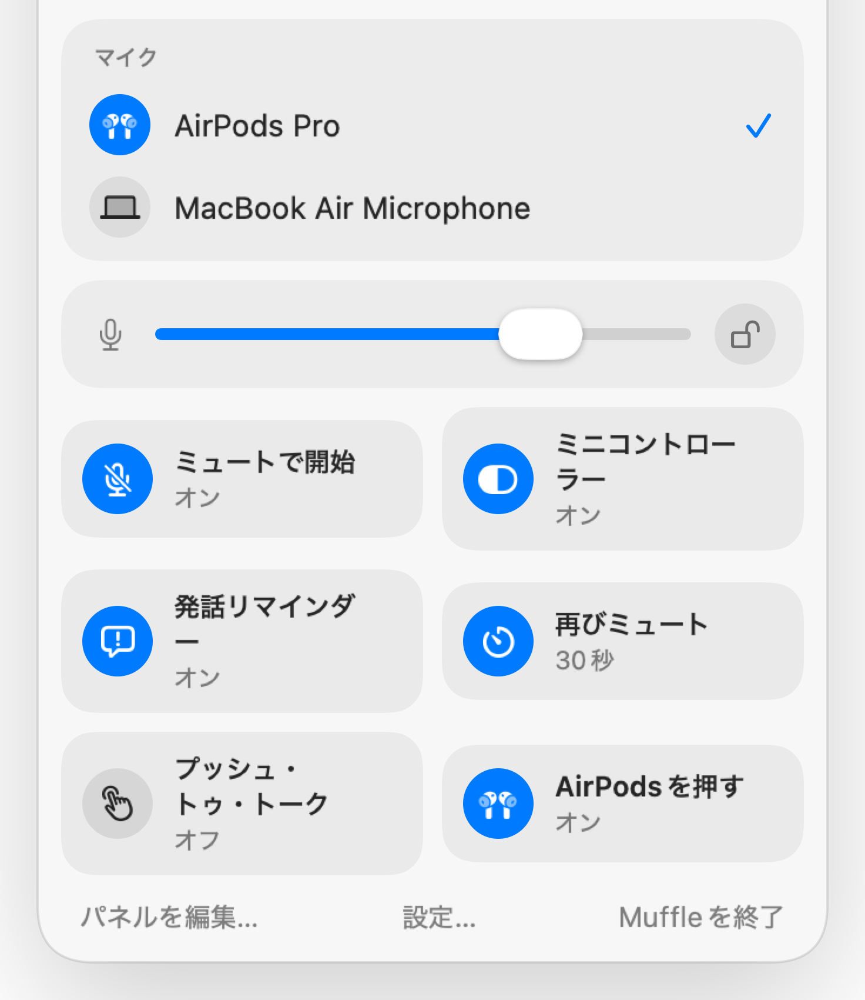
Mac用Muffle
AirPodsを押すか、ショートカットキーを1回押すだけ。Muffleはマイク自体をオフにするため、Google Meet、Zoom、Teams、Slackなど、あらゆる会議Appで確実に消音できます。
3日間無料。その後は買い切り、サブスクリプションはありません。 macOS 14 Sonoma以降に対応。
ボタンをクリックするか、AirPodsを押すか、ショートカットキーを使うだけです。Muffleはマイク自体をオフにするため、どのAppでも確実に消音されます。
メニューバーから直接、ミュート、マイクの選択、マイクレベルのロック、機能のオン/オフを切り替えられます。
Macのすべてのマイクがここに表示されます。1つ選ぶだけで、すべてのAppに反映されます。
Chrome、Zoom、Teamsはマイクレベルを勝手に変更することがあります。ロックしておけば、Muffleが元のレベルに戻します。
パネルから直接機能のオンとオフを切り替えられます。表示する項目も自由に選べます。
一般的なミュートボタンの多くは、1つのAppしかミュートできません。Muffleはマイク自体をオフにするため、Mac上のすべてのAppが無音になります。
メニューバーアイコンは標準、緑と赤、シンプルなドットから選択できます。Macの起動時にMuffleを開く設定も可能です。
すべての通話をミュートで開始し、通話が終わったらマイクをオンに戻します。Macの画面ロック時やヘッドセットの接続解除時にも自動でミュートできます。
タップで切り替え、長押しで話す、または長押しでミュート。ミュートと解除の専用キーを分けたり、右⌥のようなトークキーを割り当てたりもできます。
メニューバーパネルに表示する情報や、下部に並べるクイックトグルを自由に選択できます。
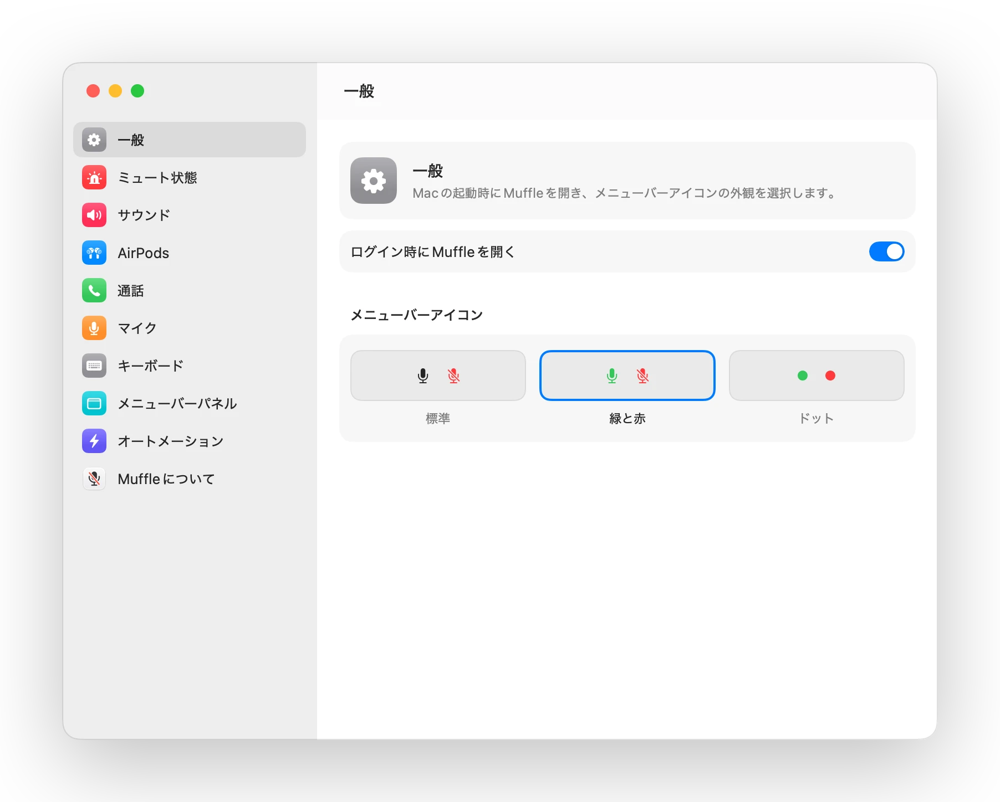
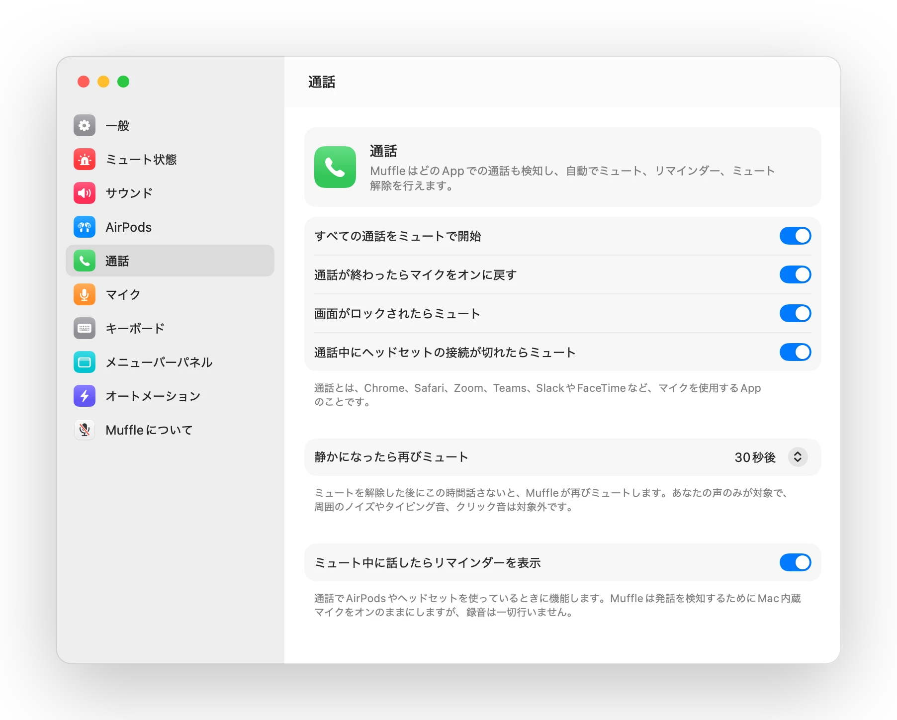
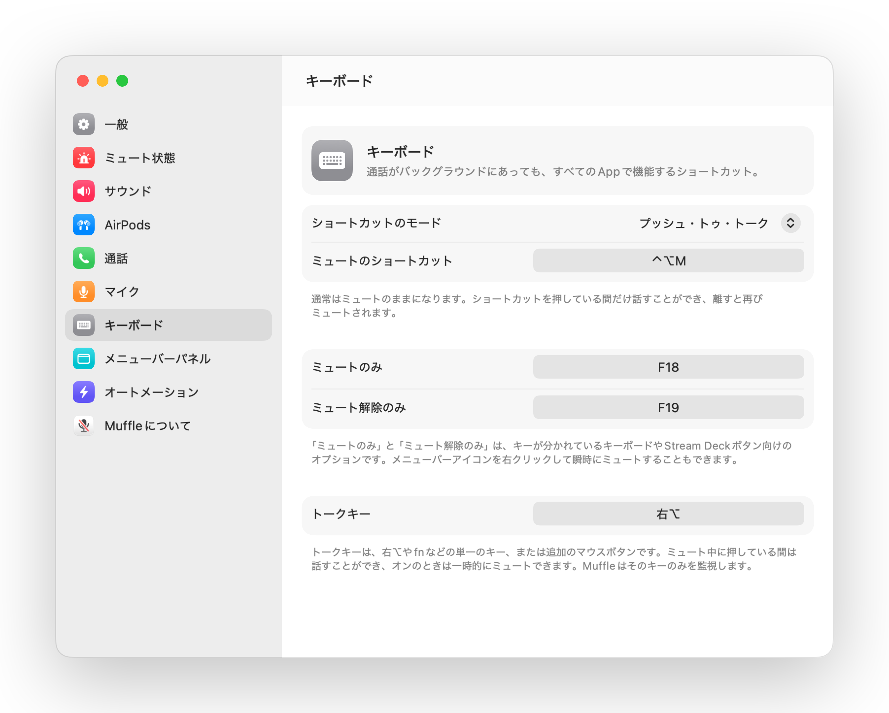
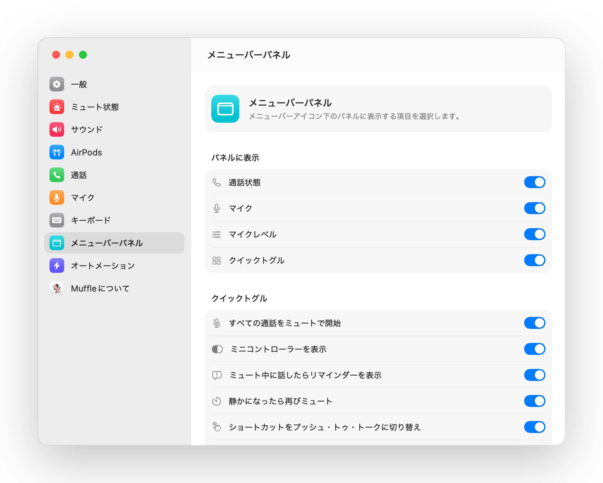
通話中にステムを1回押すとミュート、もう1回押すとミュート解除になります。Google MeetなどのWeb通話でAirPodsの操作が効かないChromeでも問題なく動作します。
ミュートにしたまま話し始めても、相手に声が届いていないことにすぐ気づけるよう、Muffleが画面上でお知らせします。
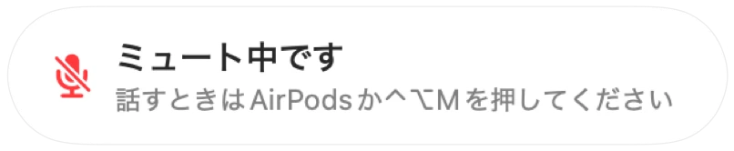
Control-Option-Mを押せば、通話画面がバックグラウンドにあってもミュートできます。ミュート中に長押しすればその間だけ話せて、キーを離すと再びミュートに戻ります。
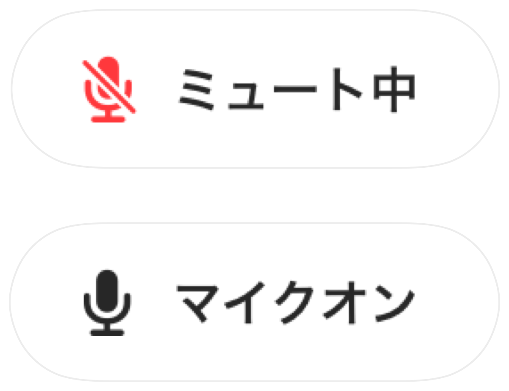
Chrome、Zoom、Teamsが勝手にマイクの入力音量を変更してしまうことがあります。レベルをロックしておけば、Muffleが自動で元の音量に戻します。

通話中は画面上に小さなコントローラーが浮かび、マイクの状態を表示します。クリックするだけでミュートの切り替えが可能です。
ショートカットの動作を選択できます。タップして切り替え、長押しで通話、咳払いのために長押しでミュートなどに対応。ミュートと解除の個別キーを設定したり、右Optionキーやマウスの追加ボタンを長押ししたりもできます。
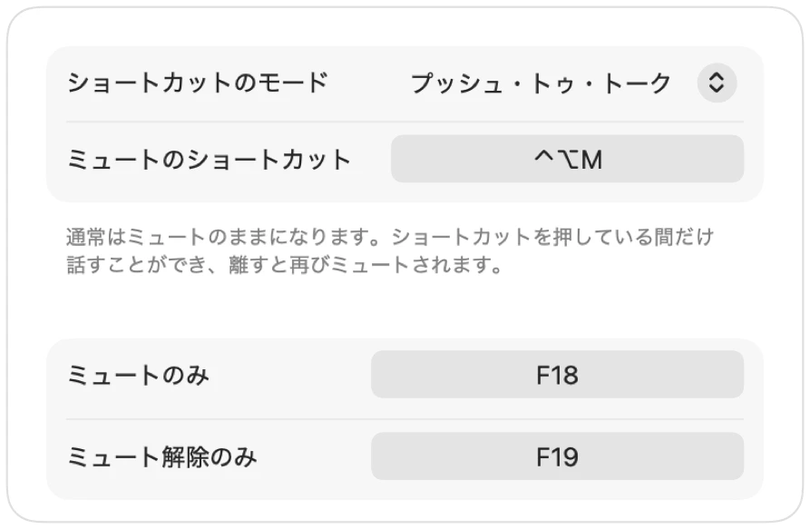
一言話すためにミュートを解除しても、指定した時間話さないでいると、Muffleが再びミュートします。あなたの声のみが対象で、タイピング音や周囲のノイズは対象外です。
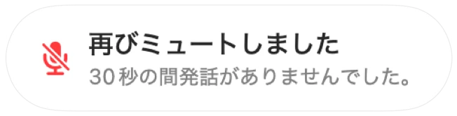
静かな部屋でAirPodsを使う場合、Macの内蔵マイクを提案してAirPods側で通話音声を最高音質で再生できるようにします。周囲が騒がしくなると、AirPodsのマイクを提案します。

すべての通話をミュート状態で開始したり、通話終了時に自動でマイクをオンに戻したり、Macの画面ロック時に自動でミュートしたりできます。
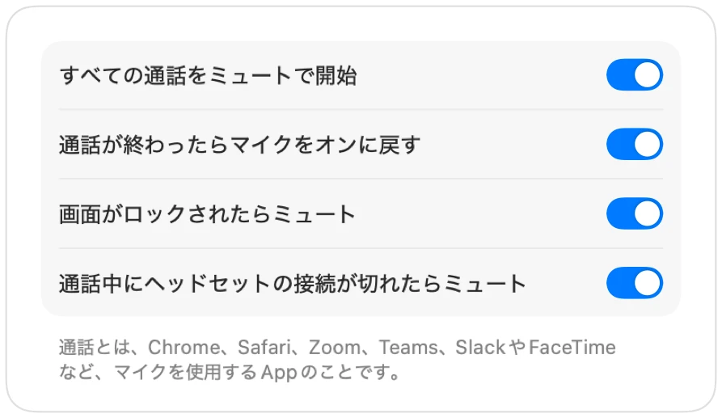
通話中にヘッドホンの接続が切れた場合、Macの内蔵マイクに切り替わって周囲の音が漏れてしまう前に、Muffleが自動でミュートします。
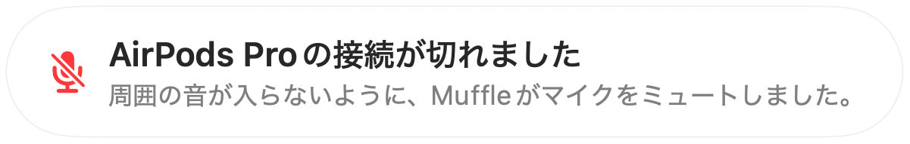
「ショートカット」App、Siri、Stream Deck、Raycast、またはコントロールセンターのボタンからマイクをミュートできます。
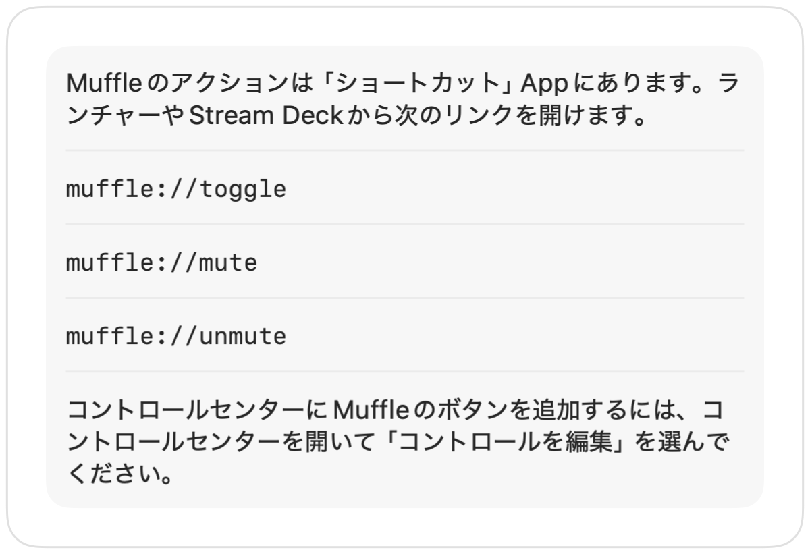
画面のエッジが緑や赤に光る表示、カラーのメニューバーアイコン、フローティングボタン、マイクごとにオフにできる確認音。お好みのものを自由にオンにできます。
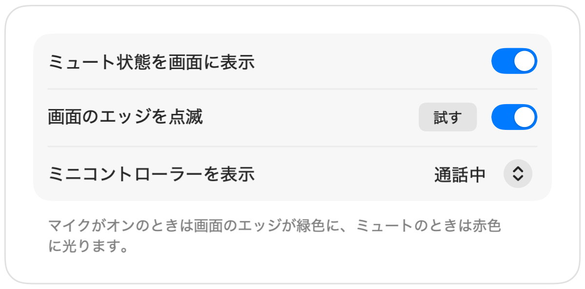
Muffleは音声を録音、保存、送信することは一切ありません。マイクのオンとオフを切り替え、音量を読み取るだけです。Appにアカウント機能はなく、アナリティクスやトラッキングも行いません。
Mac App StoreからMuffleをインストールし、マイクへのアクセスを許可します。
いつも通り、お好みのAppで通話やオンライン会議に参加します。
AirPodsを押すか、Control-Option-Mを押すか、メニューバーのアイコンをクリックしてミュートします。
はい、使えます。ChromeはAirPodsのミュート操作をWeb通話に伝えませんが、Muffleがその操作を受け取ってマイク自体をミュートします。ブラウザのタブで行うあらゆる通話でも同様に機能します。
通話App上のマイク表示はオンのままになる場合があります。これはMuffleがApp内のボタンではなく、Macのマイク自体をオフにするためです。どちらの場合も相手には声は聞こえません。ミュート中はメニューバーのMuffleアイコンが赤色に変わります。
AirPods Pro、AirPods（第3世代以降）、AirPods Max、および通話コントロールに対応したBeatsの各モデルで使えます。キーボードショートカットとメニューバーからの操作は、どんなマイクでも利用できます。
はい。デスクトップAppでもブラウザ上の通話でも、Macでマイクを使用するすべてのAppでMuffleは動作します。
いいえ、かかりません。すべての機能を3日間無料でお試しいただけます。その後は1回の買い切り購入でロック解除できます。
macOSはマイクを使用中のAppにしかAirPodsのボタン操作を渡さないため、Muffleは通話中に無音の接続を開いたままにします。音声を録音することは一切ありません。
Muffleが終了する際に自動でマイクをオンに戻すため、声が出せないまま取り残されることはありません。
macOS 14 Sonoma以降に対応しています。コントロールセンターのボタンを使用するにはmacOS 26以降が必要です。
はい。設定で「プッシュ・トゥ・トーク」を選択し、ショートカットを押している間だけ話すことができます。右Optionキーやfnキー、マウスの追加ボタンなどの単一キーを長押しすることも可能です。
通話でAirPodsのマイクを使用すると、AirPodsが通話モードに切り替わり、再生音質が低下します。静かな部屋では、Muffleが代わりにMacのマイクを使うよう提案するため、AirPodsで高音質のまま通話を聞くことができます。
いいえ。MuffleはAppleのオンデバイス音声分析を使って発話を認識するため、話している声のみが対象となります。タイピング音やクリック音、周囲のノイズでオンのままになることはありません。また、録音は一切行われません。
Muffleは3日間無料でお試しいただけます。